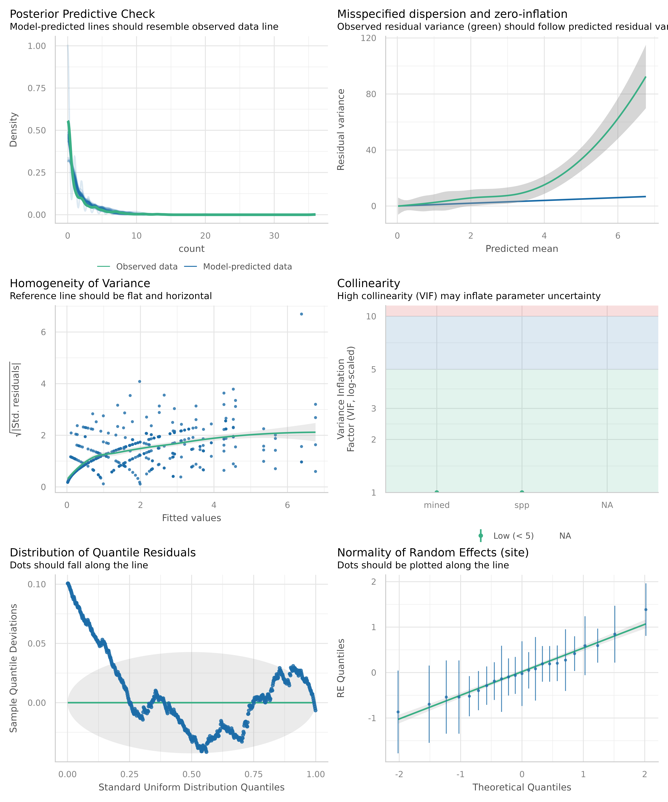

The basic workflow for simulated residual checks using
simulate_residuals() is as follows.
First, fit a model:
model <- glmmTMB::glmmTMB(
count ~ mined + spp + (1 | site),
family = poisson,
data = glmmTMB::Salamanders
)Next, simulate residuals from the model:
library(performance)
simulated_residuals <- simulate_residuals(model)
simulated_residuals
#> Simulated residuals from a model of class `glmmTMB` based on 250
#> simulations. Use `check_residuals()` to check uniformity of residuals or
#> `residuals()` to extract simulated residuals. It is recommended to refer
#> to `?DHARMa::simulateResiudals` and `vignette("DHARMa")` for more
#> information about different settings in particular situations or for
#> particular models.The raw residuals can be extracted using
residuals():
Note that since this inherits the DHARMa class, all the methods implemented in DHARMa just work, including all the tests:
DHARMa::testUniformity(simulated_residuals, plot = FALSE)
#>
#> Asymptotic one-sample Kolmogorov-Smirnov test
#>
#> data: simulationOutput$scaledResiduals
#> D = 0.08, p-value = 2e-04
#> alternative hypothesis: two-sidedFinally, run specific checks on the simulated residuals:
check_residuals(simulated_residuals)
#> Warning: Non-uniformity of simulated residuals detected (p < .001).Further implemented checks are tests for overdispersion, outliers and zero-inflation.
check_overdispersion(simulated_residuals)
#> # Overdispersion test
#>
#> dispersion ratio = 1.742
#> p-value = 0.1
#> No overdispersion detected.
check_zeroinflation(simulated_residuals)
#> # Check for zero-inflation
#>
#> Observed zeros: 387
#> Predicted zeros: 322
#> Ratio: 0.83
#> Model is underfitting zeros (probable zero-inflation) (p < .001).
check_outliers(simulated_residuals)
#> DHARMa:testOutliers with type = binomial may have inflated Type I error rates for integer-valued distributions. To get a more exact result, it is recommended to re-run testOutliers with type = 'bootstrap'. See ?testOutliers for details
#> # Outliers detection
#>
#> Proportion of observed outliers: 2.33%
#> Proportion of expected outliers: 0.80%, 95% CI [1.31, 3.81]
#> Outliers were detected (p < .001).The above three functions internally call
simulate_residuals() for more complex models automatically,
so you don’t need to call simulate_residuals() yourself.
Simulated residuals are usually more reliable than the standard
residuals, especially for complex models.
Finally, you can even perform a visual check for the entire model,
either by passing the model object directly, or the object returned from
simulate_residuals().
check_model(simulated_residuals, dot_size = 1.5)
The check_model() function is the main reason we don’t
want to prematurely extract the residuals in
simulate_residuals(), because if we do then the simulated
residual won’t contain the model fit (fittedModel in the
output below), so we won’t be able to do all of the checks we would want
to do using the model (e.g., posterior predictive checks).
str(simulated_residuals, max.level = 1)
#> List of 17
#> $ fittedModel :List of 7
#> ..- attr(*, "class")= chr "glmmTMB"
#> $ modelClass : chr "glmmTMB"
#> $ additionalParameters : list()
#> $ nObs : int 644
#> $ nSim : num 250
#> $ refit : logi FALSE
#> $ observedResponse : int [1:644] 0 0 0 2 2 1 1 2 4 1 ...
#> $ integerResponse : logi TRUE
#> $ problems : list()
#> $ fittedPredictedResponse: num [1:644] 0.197 0.197 0.197 1.896 1.896 ...
#> $ fittedFixedEffects : Named num [1:8] -1.625 2.264 -1.386 0.231 -0.77 ...
#> ..- attr(*, "names")= chr [1:8] "(Intercept)" "minedno" "sppPR" "sppDM" ...
#> $ fittedResiduals : Named num [1:644] -0.2139 -0.7867 -0.0828 -0.2951 -0.2951 ...
#> ..- attr(*, "names")= chr [1:644] "1" "2" "3" "4" ...
#> $ method : chr [1:2] "PIT" "traditional"
#> $ simulatedResponse : num [1:644, 1:250] 0 0 0 3 0 4 3 0 5 1 ...
#> ..- attr(*, "dimnames")=List of 2
#> $ scaledResiduals : num [1:644] 0.155 0.731 0.448 0.498 0.437 ...
#> $ time : 'proc_time' Named num [1:5] 0.101 0.008 0.11 0 0
#> ..- attr(*, "names")= chr [1:5] "user.self" "sys.self" "elapsed" "user.child" ...
#> $ randomState :List of 4
#> - attr(*, "class")= chr [1:3] "performance_simres" "see_performance_simres" "DHARMa"